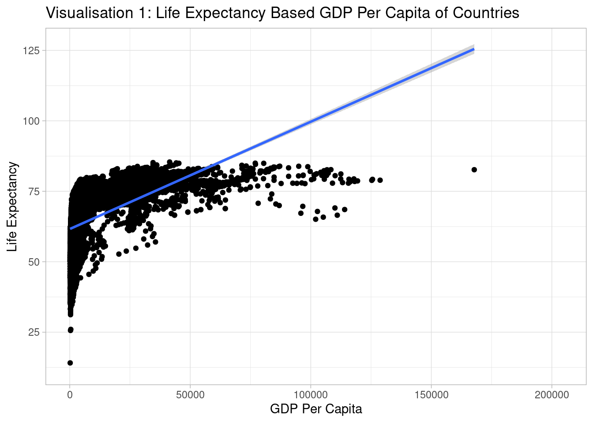
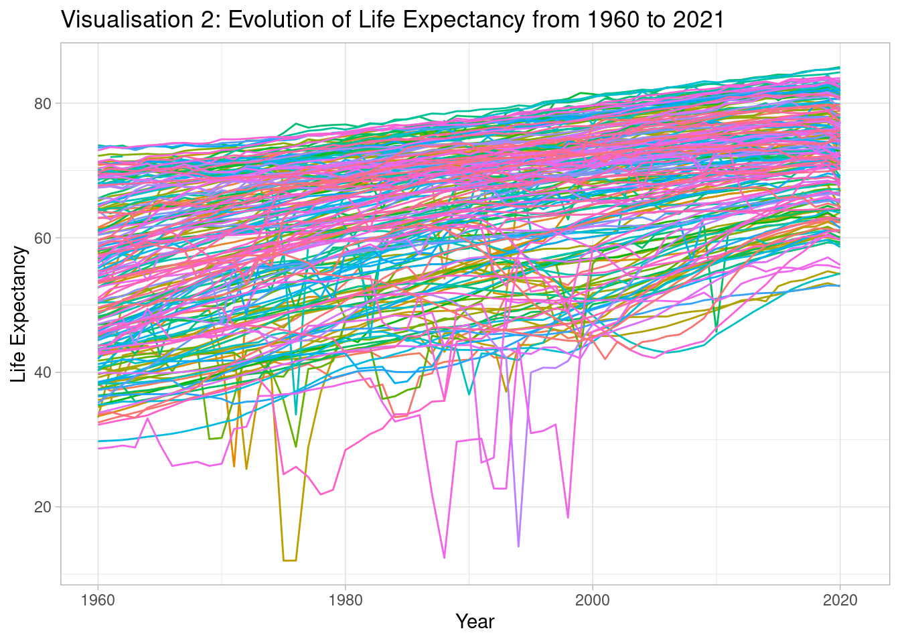
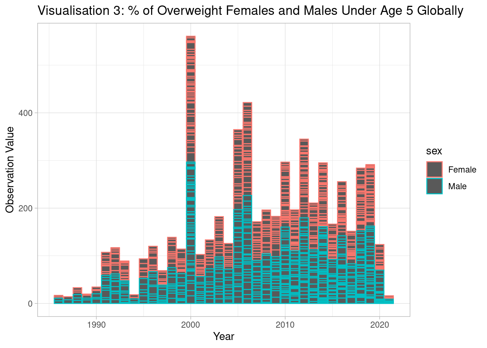
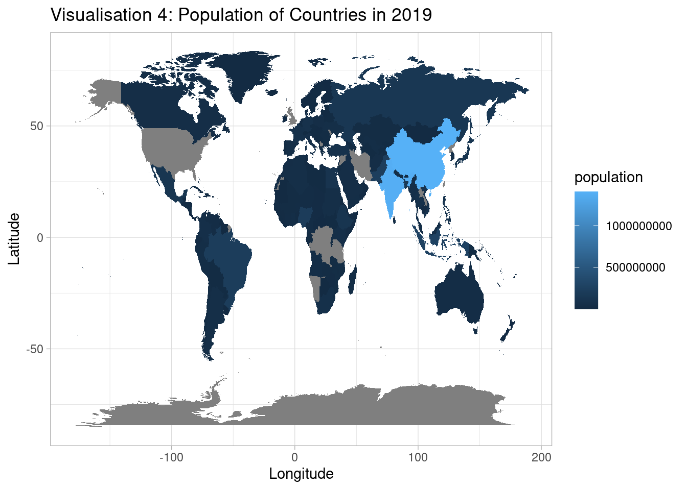

Children Under 5 Years of Age Who are Overweight
BMI-for-age which is between >+2 Standard Deviations and ≤+3 Standard Deviations
Nutrition
For children to develop and survive, it is crucial that they have good nutrition. Unfortunately, many children across the world are currently not getting the nutrition that they require to survive and thrive. Worse still, it is typically the most poor and vulnerable children who are most impacted by this (Unicef, 2023). As can be seen from visualisation 4, in 2019 many of the countries with the highest populations were not the wealthiest of economies. While, life expectancy worldwide has grown between 1960 and 2021 as shown in visualisation 2, visualisation 1 displays that there is in fact a positive correlation between the GDP per capita and the life expectancy of countries.
Overweight
Overview
A person is said to be overweight if they are too heavy for their height. According to Unicef (2023), approximately 39 million children globally under the age of 5 face an increased risk of being overweight. They highlight that this can create problems in children such as low-self esteem and depression.
Causes
According to the World Health Organisation (2021), becoming overweight results from an imbalance of too much energy consumed and too little energy expended. They highlight that people across the world are consuming foods and drinks that are high in sugars and fats as well as engaging less in physical activity.
BMI
Children with a BMI-for-age which is between >+2 standard deviations and <+3 standard deviations are considered to be overweight. BMI is an index of weight-for-height that commonly allows us to classify people who are overweight. Moreover, children who are overweight when they are young are more likely to be overweight when they will be adults (NHS, 2023).
Visualisations


